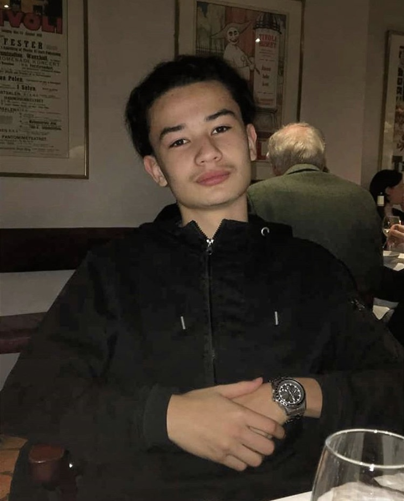

Bienvenue sur mon CV en ligne

Bonjour, Je m'appelle Thomas
J'ai 17 ans, je suis tout juste diplomé du baccalauréat. Aujourd'hui, j'étudie à l'EMLV en Master qui se situe au Pôle Leonard de vinci. Dans la vie je suis curieux et dynamique. A coté je fais beaucoup de sport, surtout du Football. Malgré mon jeune âge j'essaie d'être actif. J'écoute beaucoup de musique et je lis également. Pour en apprendre plus sur moi, je vous en prie faites comme chez vous.
Formations
- 2018-2019 1ère STMG à l'institut du Marais
- 2019-2020 Terminale STMG spécialité Marketing
- 2019-2020 Obtention du Bac mention bien
Experiences
- Avril 2017 Stage chez les Sapeurs-pompiers de Paris
- Mars 2018 Restaurant Crêperie Contemporaine 142 en tant que serveur
Centres d'intérêt
- Lecture
- Football
- Musique
- Jeux Vidéos
- Voir mes amis